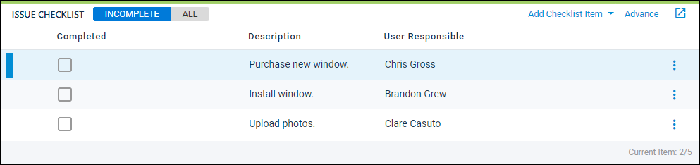

Source: https://rmxhelp.rentmanager.com/Topics/Express/Action/Issues-Checklist-Advance.htm
Advance an Issue Checklist
To keep track of all the important things your team needs to do to successfully resolve an issue, you can add checklist items to an issue. When users are assigned to checklist items, you can also advance the checklist to assign and notify the next user in the list. Advancing the checklist changes who the issue is assigned to, causing the issue to show on the user's open issue list as well as the user's Rent Manager dashboard on the Service Issues Due tile.
Related Privileges
| Group | Privilege | Column |
|---|---|---|
| Service Manager | Issue checklist | Edit |
For more information, refer to Control User Access.
Related Preferences
If the Automatically advance issues when checklist items are completed option in system preferences is checked, Rent Manager automatically assigns the service issue to the first user in the checklist with an open checklist item after an item is completed. For more information, refer to Service Issue General Options (System Preferences).
To advance an issue checklist, do the following:
-
Go to
 arrow_forward Services arrow_forward Service Manager arrow_forward Issues and select the issue with the checklist you want to advance.
arrow_forward Services arrow_forward Service Manager arrow_forward Issues and select the issue with the checklist you want to advance.
The issue's details page displays. -
In the Issue Checklist tile, if the next User Responsible in the list is not the same as the user in the Assigned To field, you can click Advance to progress the checklist and assign the issue to the next responsible user.

-
After the User Responsible completes the checklist item, check the box in the Completed column.
The checklist is advanced to the next item, and the issue is assigned to the next user.